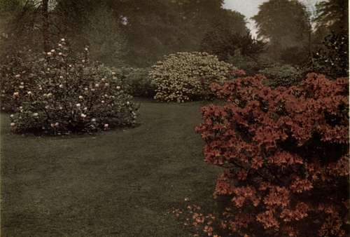

What America Can Teach England About Shrubs. Part 2
Description
This section is from the book "What England Can Teach Us About Gardening", by Wilhelm Miller. Also available from Amazon: What England Can Teach Us About Gardening.
What America Can Teach England About Shrubs. Part 2
The only one of nature's suggestions we have followed is that which culminates in the "spring garden." (See plate 73.) A superb example of banked shrubbery is on the estate of the late H. McK. Twombly, at Madison, N. J. Sometimes a whole estate is made one great spring garden, nearly every plant being chosen because of some attraction it presents between the middle of April and the first of June. Personally, I like better the year-round home of Professor Sargent, where the spring garden is only one of many beautiful features, all well proportioned, related, and secluded. But I have no quarrel with wealthy Americans who choose to glorify spring to the utmost, so that they may walk amid a dream of beauty for the six weeks such an estate is used by the family. For private specializing on a princely scale gives us visions of new and better things that every one may enjoy when the world gets better organized.
But for the ordinary person an exclusive specialty is all wrong. Perhaps the quickest way to make America beautiful is to have a rosarian in one house, a dahlia crank next door, and so on, but the ideal is to have every place interesting the year round. The obvious reason is that the vast majority of us cannot afford more than one home at a time. And in order to make a place attractive every day in the year we ought to put more thought on shrubs than on any other plants. There are many reasons for this, but it is sufficient that they give us brighter colour in winter than evergreen and at less expense. On a great estate trees may be a bigger item, because they form the framework of every home picture, while shrubs are only the trim. But city and suburban lots are so small that only a few large trees, if any, are desirable, and therefore we must always look to shrubs as the main attractions, because they are more permanent than other flowers and cheaper than evergreens.
72. THE AZALEA GARDEN AT KEW (A MAGNOLIA IN THE CENTRE). AZALEAS ARE EVEN MORE GORGEOUS WHEN PLANTED IN FRONT OF RHODODENDRONS, BECAUSE SHRUBS THAT BLOOM BEFORE THE LEAVES NEED AN EVERGREEN BACKGROUND.
Therefore, I believe, the instinct of the American people in making shrubbery a national institution is thoroughly sound. The American idea is to have the front yard of every small place composed of an unbroken lawn flanked by irregular borders of shrubbery. This frank, open treatment, which subordinates the individual's rights to the park-like effect of the whole street, is a fit expression of a democratic people. But such publicity is abhorrent to the English, with whom privacy is the dominant passion. Therefore in England front yards in city or suburbs are surrounded by a hedge or wall, and generally contain straight rows of broad-leaved evergreens, such as holly, box, and aucuba. The almost daily showers in England keep these noble decorative plants free from dust. In all parts of America the summer is too dry for mile after mile of streets lined with broad-leaved evergreens.
But if we have the right instinct about shrubbery, we are pitifully weak in carrying out the idea. For the ordinary mixed shrubbery is attractive only two months of the year and an eye-sore for five. This is simply because the only shrubs we all know are those with showy flowers. Consequently, when ordering plants for a new shrubbery we merely write down the names of all the glorious old-time favourites such as lilac, azalea, mock orange, spirea, and hydrangea, all of which are totally devoid of interest for at least five eighths of the year, while most of them are also commonplace in foliage. The same is true of the vast majority of shrubs that are famous for their flowers. It is absolutely impossible to get artistic effects by this method. We must get rid of the pestilential old idea that shrubs are only good for flowers.
The nurserymen ought to stop writing "flowering shrubs" in their catalogues instead of "deciduous shrubs." And they ought to quit booming the few shrubs that flower in July and August, because we do not need excitement in hot weather; we need repose, and the most reposeful colour then is green. Summer is the natural resting time for shrubbery, between spring flowers and autumn fruits, and our natural time to enjoy the texture of foliage. It is all wrong to try to make the shrubbery brilliant in midsummer with a lot of loud-mouthed purplish-magenta spireas like Anthony Waterer, or "ever-blooming bores" like hydrangeas. It is bad enough to have our autumn landscape made monotonous by too many top-heavy hydrangeas in every yard, without filling the shrubbery in summer with these unnatural double flowers. A "night shift" may be proper at the glue factory, but we don't want our shrubberies to look as if they were working overtime. In other words, what we ought to have in every home shrubbery is flowers in spring; foliage in summer; colours in autumn; and berries and branches in winter.
All this we can have by planning our home grounds with reference to twelve months instead of two or three. Forget all about the old-time favourites for a minute. You need not sacrifice any of them, but try this easy plan and your eyes will be opened to a new world of beauty. It is not even necessary to know one kind of shrub from another. All I ask is that you make a list of the twelve months and have two or three attractions for each month. Now list your favourites and you will see that they help you only in two or three months. The best way to fill the big gaps is to employ a landscape gardener. If you can't afford that, go to a nursery and fill in your blanks from the shrubs themselves, instead of checking off names in an alphabetical list. If you can't do that, make up your list with the help of good classified catalogues and the lists of shrubs for special purposes referred to at the end of this chapter.
Continue to:
- prev: Chapter XVII. What America Can Teach England About Shrubs
- Table of Contents
- next: What America Can Teach England About Shrubs. Part 3
Tags
garden, flowers, plants, England, effects, foliage, gardening